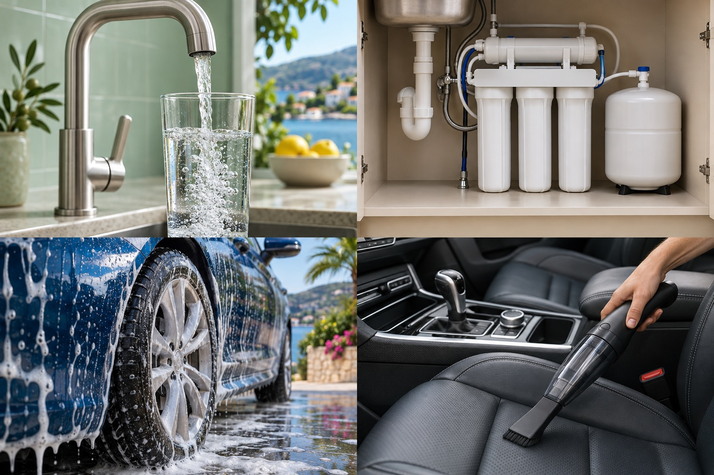

Araç Yıkama
Koltuk döşemesindeki lekeye nasıl yaklaşılır?
Araç koltuğunda leke gördüğünüzde malzemeyi ve lekenin kaynağını belirleyerek başlayın.
Yazıyı okuKuşadası Long Beach çevresindeki sahil günlerinden sonra bagajı kum, nem ve eşyalar açısından kontrol edin.

Eve döner dönmez havlu, mayo ve plaj örtülerini çıkarın. Islak eşyayı bagajda bekletmemek zeminin ve çevredeki döşemenin kurumasını kolaylaştırır. Çıkarılabilir örtüyü araç dışında temizleyin.
Bagaj kapağı eşiği, yan cepler ve katlanır koltukların birleşim yerlerinde ince kum kalabilir. Gevşek taneleri uygun uçla toplayın. Basit bir el feneri koyu renkli döşemedeki kumu görmeyi kolaylaştırır.
Küçük bir kutu veya yıkanabilir çanta kullanarak güneş kremi, terlik ve ıslak eşyaların bagaj tabanına dağılmasını sınırlayın. Zemindeki örtüyü tamamen kuruduktan sonra yerine koyun.
İVSU Blog
Araç Yıkama
Araç koltuğunda leke gördüğünüzde malzemeyi ve lekenin kaynağını belirleyerek başlayın.
Yazıyı oku
Araç Yıkama
Kuşadası’nda sahil ve günlük sürüş sonrası cam izlerini içten ve dıştan ayrı ele alın.
Yazıyı oku
Araç Yıkama
Kuşadası Kadıkalesi çevresinde günlük veya kıyı kullanımından sonra jant yüzeyine uygun bir yöntem seçin.
Yazıyı oku